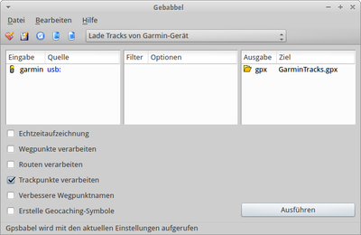

Gebabbel
Dieser Artikel wurde für die folgenden Ubuntu-Versionen getestet:
Ubuntu 16.04 Xenial Xerus
Ubuntu 14.04 Trusty Tahr
Zum Verständnis dieses Artikels sind folgende Seiten hilfreich:
 Gebabbel
Gebabbel  (hessisch: Gerede) ist eine grafische Benutzeroberfläche für GPSBabel, die die Grafikbibliothek Qt verwendet. Als besondere Merkmale wären hervorzuheben:
(hessisch: Gerede) ist eine grafische Benutzeroberfläche für GPSBabel, die die Grafikbibliothek Qt verwendet. Als besondere Merkmale wären hervorzuheben:
Bereits vorinstalliert sind zahlreiche Befehlsketten für diverse Anwendungen
Zusätzliche eigene Befehlsketten hinterlegen
Ausgabe der GPSBabel-Befehlszeile (zur Abspeicherung oder Bearbeitung)
Große Konfigurierbarkeit
Unterstützt nahezu alle Möglichkeiten von GPSBabel
Deutsche Sprachunterstützung
Installation¶
|  |
| Gebabbel |
Gebabbel ist in den Paketquellen von Ubuntu enthalten. Es muss lediglich das folgende Paket installiert [1] werden.
gebabbel (universe)
 mit apturl
mit apturl
Paketliste zum Kopieren:
sudo apt-get install gebabbel
sudo aptitude install gebabbel
Man erhält die derzeit aktuelle Version 0.4.
Bedienung¶
Die Programmoberfläche gliedert sich in drei Hauptfelder:
"Eingabe Quelle" - das eingebundene GPS-Gerät
"Filter Optionen"
"Ausgabe Ziel" - der geplante Speicherort
Darunter kann man auswählen, was bzw. welche Daten man verarbeiten möchte:
Echtzeitaufzeichnung
Wegpunkte verarbeiten
Routen verarbeiten
Trackpunkte verarbeiten
verbesserte Wegpunktenamen
Erstelle Geocaching Symbole
Unter "Hilfe -> Handbuch" erhält man lediglich einen Verweis auf http://www.gpsbabel.org .
Hilfreich ist in der Symbolleiste die Schaltfläche in der Mitte "Zuletzt verwendete Einstellungen", welche eine lange Liste der eingangs bereits erwähnten Befehlsketten in Form von diversen Anwendungen enthält. Im Regelfalle genügt auswählen und auf "Ausführen" klicken.
Vorkonfigurierte Aufgaben (Befehlsketten)¶
Nachdem das Gerät ans System angeschlossen wurde, kann man aus der Reihe an Befehlen aus dem Aufklapp-Menü wählen. Unter anderem gibt es folgende Funktionen:
Aufräumen Bereinigen
Lücken in Tracks oder Routen füllen
vom Gerät herunterladen
an das Gerät senden
Geräteposition mitloggen
Tracks bearbeiten
Routen bearbeiten, zusammenführen
Mit "Ausführen" wird GPSBabel entsprechend gestartet. Das Programm zeigt an, wenn Pfade nicht korrekt gesetzt sind zu Dateien und zum Gerät.
Eigene Befehlsketten¶
Um eigene Befehle hinzuzufügen anwählen und den gewünschten Befehl z.B. gpsbabel -t -i garmin -f usb: -o kml,points=0,line_color=ff0000ff -F Track.kml eingeben.
Die Checkboxen im Fenster aktivieren und unter einen passenden Namen eingeben und mit "OK" speichern.
Einige Beispiele sind unter GPSBabel zu finden.
Mit kann das angewählte Kommando gelöscht werden.
Programmeinstellungen¶
Über "Bearbeiten -> Programmeinstellungen" kann der Pfad zu GPSBabel geändert werden.
Tastenkürzel¶
| Gebabbel | |
| Taste(n) | Funktion |
| Strg + K | Kommandozeile |
| Strg + S | speichern |
| Strg + X | ausführen |
| Entf | Listen leeren. |
| ⌫ | löschen |
| Strg + P | Programmeinstellungen |
| Strg + Q | Programm beenden. |
Problembehandlung¶
Eventuell benötigt die installierte Version Root-Rechte (Quellen: Diskussion). Um ohne Root-Rechte Daten auszutauschen, muss eine udev-Regel wie im Artikel Garmin eTrex Legend HCx beschrieben angelegt werden.
 - Blogeintrag, 09/2010
- Blogeintrag, 09/2010- Erstellt mit Inyoka
-
 2004 – 2017 ubuntuusers.de • Einige Rechte vorbehalten
2004 – 2017 ubuntuusers.de • Einige Rechte vorbehalten
Lizenz • Kontakt • Datenschutz • Impressum • Serverstatus -
Serverhousing gespendet von